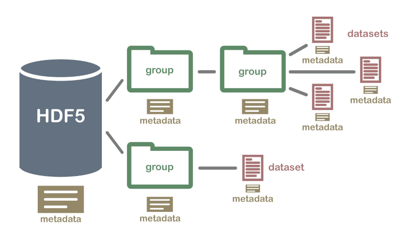

Introducing Versioned HDF5
The problem of storing and manipulating large amounts of data is a challenge in many scientific computing and industry applications. One of the standard data models for this is HDF5, an open technology that implements a hierarchical structure (similar to a file-system structure) for storing large amounts of possibly heterogeneous data within a single file. Data in an HDF5 file is organized into groups and datasets; you can think about these as the folders and files in your local file system, respectively. You can also optionally store metadata associated with each item in a file, which makes this a self-describing and powerful data storage model.
Image: Hierarchical Data Format (HDF5) Dataset (From https://www.neonscience.org/about-hdf5)
Since reading and writing operations in these large data files must be fast, the HDF5 model includes data compression and chunking. This technique allows the data to be retrieved in subsets that fit the computer's memory or RAM, which means that it doesn't require the entire file contents to be loaded into memory at once. All this makes HDF5 a popular format in several domains, and with h5py it is possible to use a Pythonic interface to read and write data to a HDF5 file.
Now, let's say you have an HDF5 file with contents that change over time. You may want to add or remove datasets, change the contents of the data or the metadata, and keep a record of which changes occurred when, with a way to recover previous versions of this file. Since HDF5 is a binary file format, using regular version control tools (such as git) may prove difficult.
Introducing the Versioned HDF5 library
The Versioned HDF5 library is a versioned abstraction on top of h5py. Because of the flexibility of the HDF5 data model, all versioning data is stored in the file itself, which means that different versions of the same data (including version metadata) can be stored in a single HDF5 file.
To see how this works in practice, let's say we create a regular HDF5 file with
h5py called mydata.h5.
>>> import h5py
>>> fileobject = h5py.File('mydata.h5', 'w')
Now, you can create a VersionedHDF5file object:
>>> from versioned_hdf5 import VersionedHDF5File
>>> versioned_file = VersionedHDF5File(fileobject)
This file still doesn't have any data or versions stored in it. To create a new version, you can use a context manager:
>>> with versioned_file.stage_version('version1') as group:
... group['mydataset'] = np.ones(10000)
The context manager returns a h5py group object, which should be modified in-place to build the new version. When the context manager exits, the version will be written to the file. From this moment on, any interaction with the versioned groups and datasets should be done via the Versioned HDF5 API, rather than h5py.
Now, the versioned_file object can be used to expose versioned data by version name:
>>> v1 = versioned_file['version1']
>>> v1
<Committed InMemoryGroup "/_version_data/versions/version1">
>>> v1['mydataset']
<InMemoryArrayDataset "mydataset": shape (10000,), type "<f8">
To access the actual data stored in version version1, we use the same syntax
as h5py:
>>> dataset = v1['mydataset']
>>> dataset[()]
array([1., 1., 1., ..., 1., 1., 1.])
Suppose now we want to commit a new version of this data, changing just a slice of the data. We can do this as follows:
>>> with versioned_file.stage_version('version2') as group:
... group['mydataset'][0] = -10
Both versions are now stored in the file, and can be accessed independently.
>>> v2 = versioned_file['version2']
>>> v1['mydataset'][()]
array([1., 1., 1., ..., 1., 1., 1.])]
>>> v2['mydataset'][()]
array([-10., 1., 1., ..., 1., 1., 1.])]
Current status
versioned-hdf5 1.0 has recently been released, and is available on PyPI and conda-forge. You can install it with
conda install -c conda-forge versioned-hdf5
The development is on GitHub. Currently, the library supports basic use cases, but there is still a lot to do. We welcome community contributions to the library, including any issues or feature requests.
For now, you can check out the documentation for more details on what is supported and how the library is built.
Next steps
This is the first post in a series about the Versioned HDF5 library. Next, we'll discuss the performance of Versioned HDF5 files, and the design of the library.
The Versioned HDF5 library was created by the D. E. Shaw group in conjunction with Quansight.